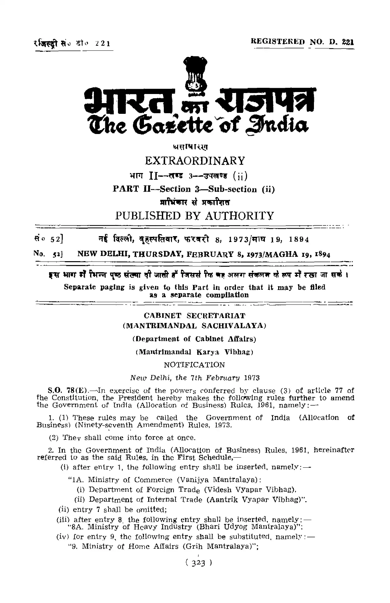
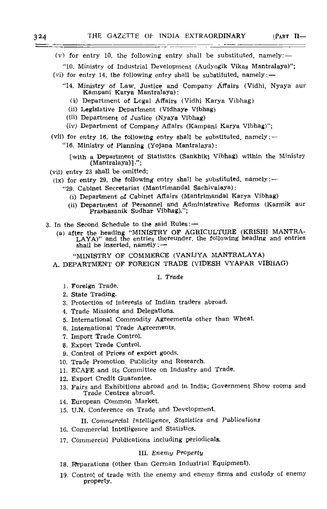
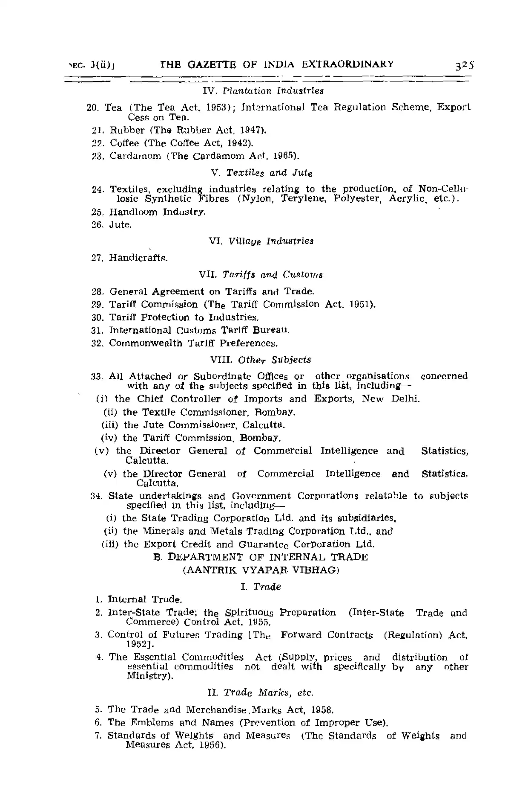
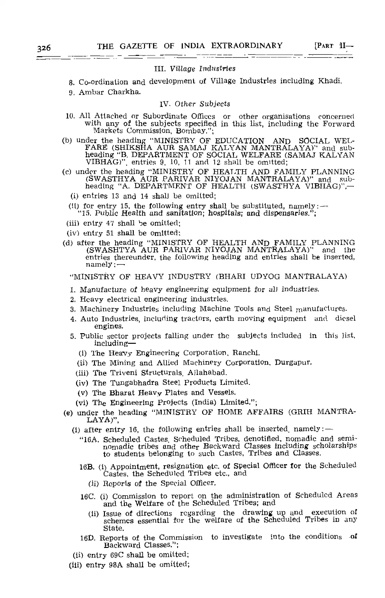
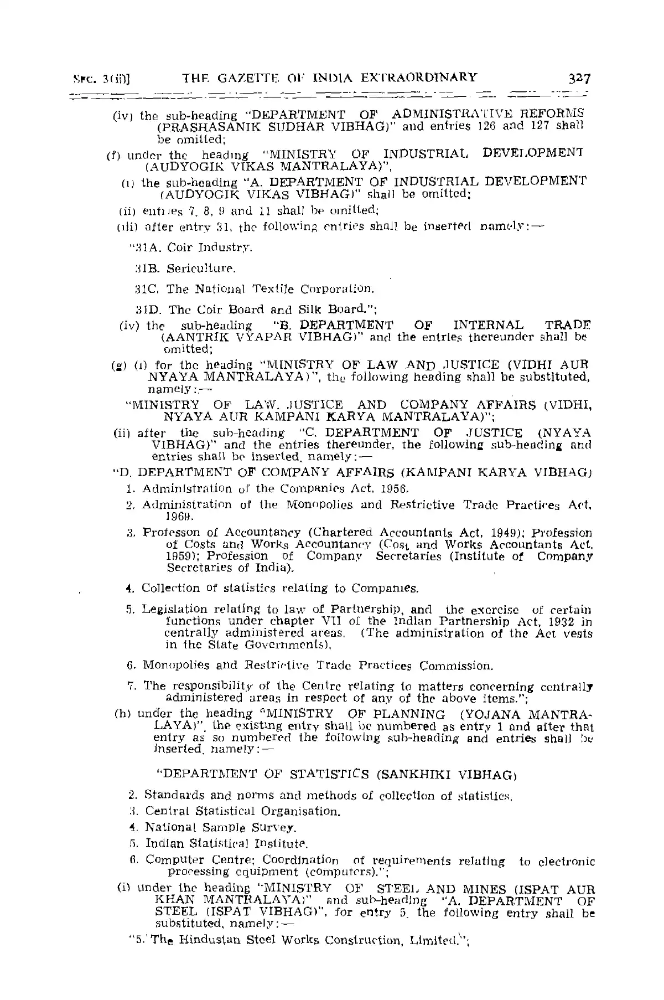
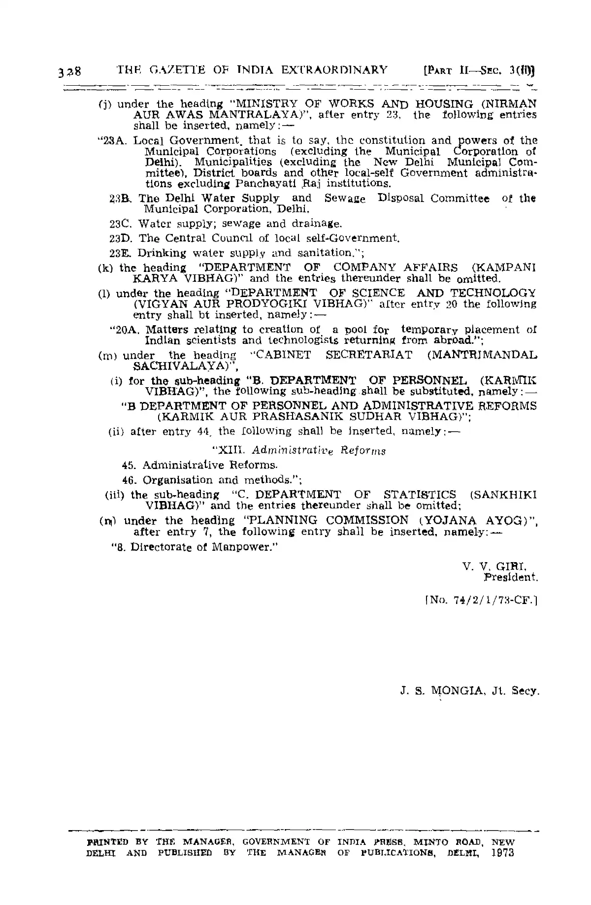

Amendment #97 (S.O. 78(E), 1973)
34 changes: 9 to the First Schedule, 25 to the Second Schedule. 33 applied1 not applied
What it did to the ministries
- spun offMinistry of Commerce is separated from Ministry of Foreign Trade (26 subjects) change 1, 2, 10 · histories: Foreign Trade, Commerce
- spun offMinistry of Commerce is separated from Ministry of Industrial Development (10 subjects) change 1, 5, 10, 16, 21, 22 · histories: Industry, Commerce
- spun offMinistry of Heavy Industry is separated from Ministry of Industrial Development (4 subjects) change 3, 5, 16, 21, 22, 23 · histories: Industry, Heavy Industry
- absorbedDepartment of Company Affairs joins Ministry of Law, Justice and Company Affairs (41 → 49) change 6, 8, 25, 26 · histories: Company Affairs, Law and Justice
- renamedMinistry of Law and Justice is renamed Ministry of Law, Justice and Company Affairs change 6, 25, 26 · histories: Law and Justice
The order, page by page
Page 1 of 6

1234after Schedule 1 › entry 1
- 1A. Ministry of Commerce
- i. Department of Foreign Trade
- ii. Department of Internal Trade
applied at schedule 1 › ministry 1A in the Rules after #97
Schedule 1 › entry 7
applied at schedule 1 › ministry 7 in the Rules after #97
after Schedule 1 › entry 8
- 8A. Ministry of Heavy Industry
applied at schedule 1 › ministry 8A in the Rules after #97
Schedule 1 › entry 9
- 9. Ministry of Home Affairs
applied at schedule 1 › ministry 9 in the Rules after #97
Page 2 of 6

5678910Schedule 1 › entry 10
- 10. Ministry of Industrial Development
applied at schedule 1 › ministry 10 in the Rules after #97
Schedule 1 › entry 14
- 14. Ministry of Law, Justice and Company Affairs
- i. Department of Legal Affairs
- ii. Legislative Department (Vidhaye Vibhag)
- iii. Department of Justice
- iv. Department of Company Affairs
applied at schedule 1 › ministry 14 in the Rules after #97
Schedule 1 › entry 16
- 16. Ministry of Planning
- -. Department of Statistics
applied at schedule 1 › ministry 16 in the Rules after #97
Schedule 1 › entry 23
applied at schedule 1 › department 23 in the Rules after #97
Schedule 1 › entry 29
- 29. Cabinet Secretariat
- i. Department of Cabinet Affairs
- ii. Department of Personnel and Administrative Reforms
applied at schedule 1 › department 29 in the Rules after #97
after Schedule 2 › MINISTRY OF AGRICULTURE
- MINISTRY OF COMMERCE
- A. DEPARTMENT OF FOREIGN TRADE
- I. Trade
- 1. Foreign Trade.
- 2. State Trading.
- 3. Protection of interests of Indian traders abroad.
and 62 more
- 4. Trade Missions and Delegations.
- 5. International Commodity Agreements other than Wheat.
- 6. International Trade Agreements.
- 7. Import Trade Control.
- 8. Export Trade Control.
- 9. Control of Prices of export goods.
- 10. Trade Promotion Publicity and Research.
- 11. ECAFE and its Committee on Industry and Trade.
- 12. Export Credit Guarantee.
- 13. Fairs and Exhibitions abroad and in India; Government Show rooms and Trade Centres abroad.
- 14. European Common Market.
- 15. U.N. Conference on Trade and Development.
- II. Commercial Intelligence, Statistics and Publications
- 16. Commercial Intelligence and Statistics.
- 17. Commercial Publications including periodicals.
- III. Enemy Property
- 18. Reparations (other than German Industrial Equipment)
- 19. Control of trade with the enemy and enemy firms and custody of enemy property. SEC. 3(H)!
- IV. Plantation Industries
- 20. Tea (The Tea Act, 1953); International Tea Regulation Scheme, Export Cess on Tea.
- 21. Rubber (The Rubber Act, 1947).
- 22. Coffee (The Coffee Act, 1942).
- 23. Cardamom (The Cardamom Act, 1965).
- V. Textiles and Jute
- 24. Textiles, excluding industries relating to the production, of Non-Cellu losic Synthetic Fibres (Nylon, Terylene, Polyester, Acrylic, etc.).
- 25. Handloom Industry.
- 26. Jute.
- VI. Village Industries
- 27. Handicrafts.
- VII. Tariffs and Customs
- 28. General Agreement on Tariffs and Trade.
- 29. Tariff Commission (The Tariff Commission Act. 1951).
- 30. Tariff Protection to Industries.
- 31. International Customs Tariff Bureau.
- 32. Commonwealth Tariff Preferences.
- VIII. Other Subjects
- 33. All Attached or Subordinate Offices or other organisations concerned with any of the subjects specified in this list, including-
- i. the Chief Controller of Imports and Exports, New Delhi.
- ii. the Textile Commissioner, Bombay.
- iii. the Jute Commissioner, Calcutta.
- iv. the Tariff Commission, Bombay.
- v. the Director General of Commercial Intelligence and Statistics Calcutta.
- v. the Director General of Commercial Intelligence and Statistics Calcutta
- 34. State undertakings and Government Corporations relatable to subjects specified in this list, including—
- i. the State Trading Corporation Ltd. and its subsidiaries
- ii. the Minerals and Metals Trading Corporation Ltd., and
- ill. the Export Credit and Guarantee Corporation Ltd.
- B. DEPARTMENT OF INTERNAL TRADE
- I. Trade
- 1. Internal Trade.
- 2. Inter-State Trade; the Spirituous Preparation (Inter-State Trade and Commerce) Control Act, 1955
- 3. Control of Futures Trading [The Forward Contracts (Regulation) Act 1952].
- 4. The Essential Commodities Act (Supply, prices and distribution of essential commodities not dealt with specifically by any other Ministry).
- II. Trade Marks, etc.
- 5. The Trade and Merchandise Marks Act, 1958
- 6. The Emblems and Names (Prevention of Improper Use)
- 7. Standards of Weights and Measures (The Standards of Weights and Measures Act, 1956).
- III. Village Industries
- 8. Co-ordination and development of Village Industries including Khadi.
- 9. Ambar Charkha.
- IV. Other Subjects
- 10. All Attached or Subordinate Offices Or other organisations concerned with any of the subjects specified in this list, including the Forward Markets Commission, Bombay.
applied at schedule 2 › ministry MINISTRY OF COMMERCE in the Rules after #97
read page break
Page 3 of 6

Page 4 of 6

111213141516171819Schedule 2 › MINISTRY OF EDUCATION AND SOCIAL WEL- FARE › DEPARTMENT OF SOCIAL WELFARE › entry 9; Schedule 2 › MINISTRY OF EDUCATION AND SOCIAL WEL- FARE › DEPARTMENT OF SOCIAL WELFARE › entry 10; Schedule 2 › MINISTRY OF EDUCATION AND SOCIAL WEL- FARE › DEPARTMENT OF SOCIAL WELFARE › entry 11; Schedule 2 › MINISTRY OF EDUCATION AND SOCIAL WEL- FARE › DEPARTMENT OF SOCIAL WELFARE › entry 12
applied at schedule 2 › ministry MINISTRY OF EDUCATION AND SOCIAL WELFARE › department B › entry 9 in the Rules after #97
Schedule 2 › MINISTRY OF HEALTH AND FAMILY PLANNING › DEPARTMENT OF HEALTH › entry 13; Schedule 2 › MINISTRY OF HEALTH AND FAMILY PLANNING › DEPARTMENT OF HEALTH › entry 14
applied at schedule 2 › ministry MINISTRY OF HEALTH AND FAMILY PLANNING › department A › group_heading II › entry 13 in the Rules after #97
Schedule 2 › MINISTRY OF HEALTH AND FAMILY PLANNING › DEPARTMENT OF HEALTH › entry 15
- 15. Public Health and sanitation; hospitals; and dispensaries.
applied at schedule 2 › ministry MINISTRY OF HEALTH AND FAMILY PLANNING › department A › group_heading II › entry 15 in the Rules after #97
Schedule 2 › MINISTRY OF HEALTH AND FAMILY PLANNING › DEPARTMENT OF HEALTH › entry 47
applied at schedule 2 › ministry MINISTRY OF HEALTH AND FAMILY PLANNING › department A › group_heading IV › entry 47 in the Rules after #97
Schedule 2 › MINISTRY OF HEALTH AND FAMILY PLANNING › DEPARTMENT OF HEALTH › entry 51
applied at schedule 2 › ministry MINISTRY OF HEALTH AND FAMILY PLANNING › department A › group_heading IV › entry 51 in the Rules after #97
after Schedule 2 › MINISTRY OF HEALTH AND FAMILY PLANNING
- MINISTRY OF HEAVY INDUSTRY
- 1. Manufacture of heavy engineering equipment for all industries.
- 2. Heavy electrical engineering industrles.
- 3. Machinery Industries including Machine Tools and Steel manufactures.
- 4. Auto Industries, Including tractors, carth moving equipment and diesel engines.
- 5. Public sector projects falling under the subjects included in this list including (1) The Heavy Engineering Corporation, Ranchi.
and 5 more
- ii. The Mining and Allied Machinery Corporation, Durgapur
- iii. The Triveni Structurals, Allahabad.
- iv. The Tungabhadra Steel Products Limited.
- v. The Bharat Heavy Plates and Vessels.
- vi. The Engineering Projects (India) Limited.
applied at schedule 2 › ministry MINISTRY OF HEAVY INDUSTRY in the Rules after #97
after Schedule 2 › MINISTRY OF HOME AFFAIRS › entry 16
- 16A. Scheduled Castes. Scheduled Tribes, denotified, nomadic and seminomadic tribes and other Backward Classes including scholarships to students belonging to such Castes, Tribes and Classes.
- 16B. (I) Appointment, resignation etc. of Special Officer for the Scheduled Castes, the Scheduled Tribes etc., and
- ii. Reports of the Special Officer.
- 16C.
- i. Commission to report on the administration of Scheduled Areas and the Welfare of the Scheduled Tribes; and
- li. Issue of directions regarding the drawing up and execution of schemes essential for the welfare of the Scheduled Tribes in any State.
and 1 more
- 16D. Reports of the Commission to investigate into the conditions of Backward Classes.
applied at schedule 2 › ministry MINISTRY OF HOME AFFAIRS › part I › group_heading The following subjects which are relatable to… in the Rules after #97
Schedule 2 › MINISTRY OF HOME AFFAIRS › entry 69C
applied at schedule 2 › ministry MINISTRY OF HOME AFFAIRS › part I › group_heading The following subjects which are relatable to… in the Rules after #97
Schedule 2 › MINISTRY OF HOME AFFAIRS › entry 98A
not applied (the change could not be placed in the Rules as read; see How this document was read)
Page 5 of 6

2021222324252629Schedule 2 › MINISTRY OF HOME AFFAIRS › DEPARTMENT OF ADMINISTRATIVE REFORMS; Schedule 2 › MINISTRY OF HOME AFFAIRS › DEPARTMENT OF ADMINISTRATIVE REFORMS › entry 126; Schedule 2 › MINISTRY OF HOME AFFAIRS › DEPARTMENT OF ADMINISTRATIVE REFORMS › entry 127
applied at schedule 2 › ministry MINISTRY OF HOME AFFAIRS › department in the Rules after #97
states inferred loose
Schedule 2 › MINISTRY OF INDUSTRIAL DEVELOPMENT › DEPARTMENT OF INDUSTRIAL DEVELOPMENT
applied at schedule 2 › ministry MINISTRY OF INDUSTRIAL DEVELOPMENT › department A in the Rules after #97
Schedule 2 › MINISTRY OF INDUSTRIAL DEVELOPMENT › entry 7; Schedule 2 › MINISTRY OF INDUSTRIAL DEVELOPMENT › entry 8; Schedule 2 › MINISTRY OF INDUSTRIAL DEVELOPMENT › entry 9; Schedule 2 › MINISTRY OF INDUSTRIAL DEVELOPMENT › entry 11
applied at schedule 2 › ministry MINISTRY OF INDUSTRIAL DEVELOPMENT › group_heading III › entry 7 in the Rules after #97
after Schedule 2 › MINISTRY OF INDUSTRIAL DEVELOPMENT › entry 31
- 31A. Coir Industry.
- 31B. Sericulture.
- 31C. The National Textile Corporation
- 31D. The Coir Board and Silk Board.
applied at schedule 2 › ministry MINISTRY OF INDUSTRIAL DEVELOPMENT › group_heading VI › entry 31A in the Rules after #97
Schedule 2 › MINISTRY OF INDUSTRIAL DEVELOPMENT › DEPARTMENT OF INTERNAL TRADE
applied at schedule 2 › ministry MINISTRY OF INDUSTRIAL DEVELOPMENT › department B in the Rules after #97
Schedule 2 › MINISTRY OF LAW AND JUSTICE
- MINISTRY OF LAW. JUSTICE AND COMPANY AFFAIRS
applied at schedule 2 › ministry MINISTRY OF LAW. JUSTICE AND COMPANY AFFAIRS in the Rules after #97
after Schedule 2 › MINISTRY OF LAW. JUSTICE AND COMPANY AFFAIRS › DEPARTMENT OF JUSTICE
- D. DEPARTMENT OF COMPANY AFFAIRS
- 1. Administration of the Companies Act, 1956.
- 2. Administration of the Monopolies and Restrictive Trade Practices Act
- 1969.
- 3. Professon of Accountancy (Chartered Accountants Act, 1949); Profession of Costs and Works Accountancy (Cost and Works Accountants Act 1959); Profession of Company Secretaries (Institute of Company Secretaries of India).
- 4. Collection of statistics relating to Companies.
and 3 more
- 5. Legislation relating to law of Partnership, and the excrcise of certain functions under chapter VII of the Indlan Partnership Act, 1932 in centrally administered areas. (The administration of the Act vests in the State Governments)
- 6. Monopolies and Restrictive Trade Practices Commission.
- 7. The responsibility of the Centre relating to matters concerning centrally administered areas in respect of any of the above items.
applied at schedule 2 › ministry MINISTRY OF LAW. JUSTICE AND COMPANY AFFAIRS › department D in the Rules after #97
Schedule 2 › MINISTRY OF STEEL AND MINES › DEPARTMENT OF STEEL › entry 5
- 5. The Hindustan Steel Works Construction, Limited.
applied at schedule 2 › ministry MINISTRY OF STEEL AND MINES › department A › entry 5 in the Rules after #97
read sequence
Page 6 of 6

30313233343536after Schedule 2 › MINISTRY OF WORKS AND HOUSING › entry 23
- 23A. Local Government that is to say, the constitution and powers of the Municipal Corporations (excluding the Municipal Corporation of Delhi). Municipalities (excluding the New Delhi Municipal Committee), District boards and other local-self Government administrations excluding Panchayati Raj…
- 23B. The Delhi Water Supply and Sewage Disposal Committee of the Municipal Corporation, Delhi
- 23C. Water supply; sewage and drainage.
- 23D. The Central Council of local self-Government
- 23E. Drinking water supply and sanitation.
applied at schedule 2 › ministry MINISTRY OF WORKS AND HOUSING › entry 23A in the Rules after #97
Schedule 2 › DEPARTMENT OF COMPANY AFFAIRS
applied at schedule 2 › department in the Rules after #97
after Schedule 2 › DEPARTMENT OF SCIENCE AND TECHNOLOGY › entry 20
- 20A. Matters relating to creation of a pool for temporary placement of Indlan scientists and technologists returning from abroad.
applied at schedule 2 › department DEPARTMENT OF SCIENCE AND TECHNOLOGY › entry 20A in the Rules after #97
Schedule 2 › CABINET SECRETARIAT › DEPARTMENT OF PERSONNEL
- B. DEPARTMENT OF PERSONNEL AND ADMINISTRATIVE REFORMS
applied at schedule 2 › ministry CABINET SECRETARIAT › department B in the Rules after #97
after Schedule 2 › CABINET SECRETARIAT › DEPARTMENT OF PERSONNEL AND ADMINISTRATIVE REFORMS › entry 44
- XIII. Administrative Reforms
- 45. Administrative Reforms.
- 46. Organisation and methods.
applied at schedule 2 › ministry CABINET SECRETARIAT › department B › group_heading XII › entry 44 in the Rules after #97
Schedule 2 › CABINET SECRETARIAT › DEPARTMENT OF STATISTICS
applied at schedule 2 › ministry CABINET SECRETARIAT › department D in the Rules after #97
after Schedule 2 › PLANNING COMMISSION › entry 7
- 8. Directorate of Manpower.
applied at schedule 2 › ministry PLANNING COMMISSION › entry 8 in the Rules after #97
How this document was read
Edits to the reading
| Date | By | Edit | Before → after |
|---|---|---|---|
| 12 November 2026 | claude | word corrected |
Changes placed by an inference rule
| Change | Rule | Status | What |
|---|---|---|---|
| 20 | loose | accepted | change 20: department DEPARTMENT OF ADMINISTRATIVE REFORMS taken for department Department of Administrative Reformis, named loosely |
| 20 | loose | accepted | change 20: department DEPARTMENT OF ADMINISTRATIVE REFORMS taken for department Department of Administrative Reformis, named loosely |
| 20 | loose | accepted | change 20: department DEPARTMENT OF ADMINISTRATIVE REFORMS taken for department Department of Administrative Reformis, named loosely |
Known issues
| Change | Issue | Known as |
|---|---|---|
| 19 | change 19: no entry 98A under schedule 2 › ministry MINISTRY OF HOME AFFAIRS | Home Affairs' structure |
From the Government of India (Allocation of Business) Rules, 1961 and their amendments, as published by the Cabinet Secretariat (cabsec.gov.in), read by orgpedia. The readings of the older scanned gazettes have known gaps.